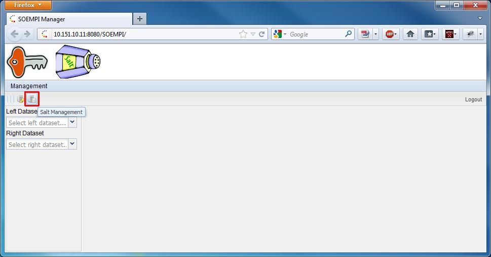
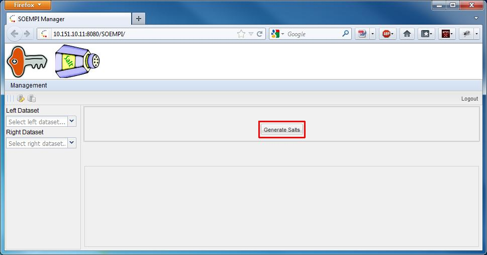
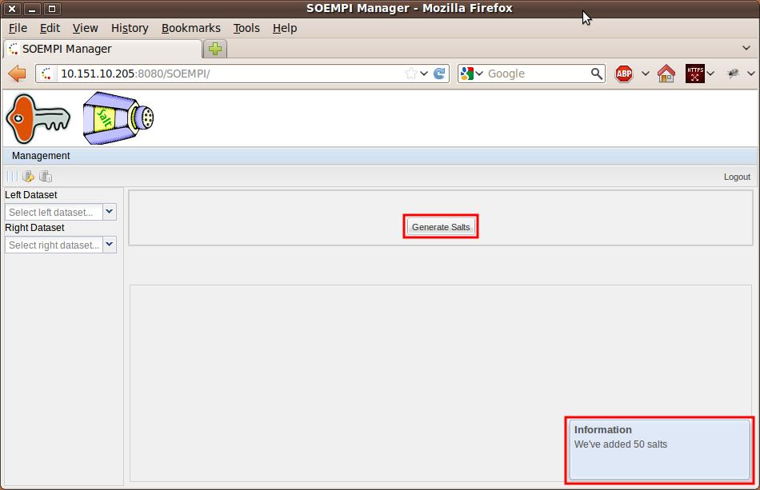
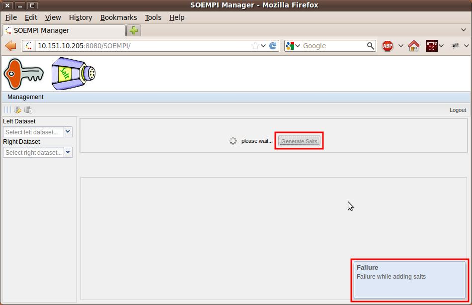

For troubleshooting and details see.
For troubleshooting and details see.




This error may occur the first time you try to add a salt. SOEMPI is under development and the user management section is not completed yet. For some reason sometimes SOEMPI cannot fill in the userCreatedBy property of the salt entity. That is a non-null column in the database, so this will generate an error. You'll see that the next add salt attempts will be successful. One workoaround for the problem could be to try to Add a (dummy) Key entity first before you would try to add a Salt entity. If you see a Failure message click on the button again.
The error's result is that the Key entities won't start at the id you configured at the other components. Either you have to reconfigure the salt related settings in all SOEMPI components, or you would have to resolve the error manually in the database. If you try to curate the error in the database by hand, be aware that every generated salt has a corresponding audit entry in the database. So if you want to change any salt's id, you have to delete the corresponding audit id too.